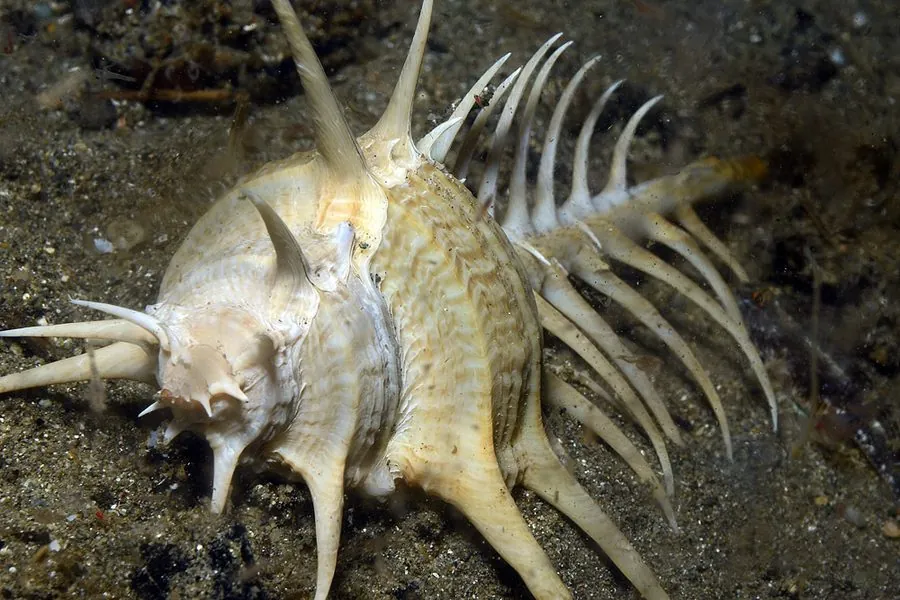

软体动物 · 动物界
骨螺 Murex pecten

壳上长满细长棘刺的骨螺，棘刺像梳齿一样排列，壳形奇特，是收藏者追捧的观赏贝，也会捕食双壳类。
- 分类
- 门软体动物门纲腹足纲目新腹足目科骨螺科属骨螺属
- 栖息环境
- 潮间带下区至水深数十米的沙泥和碎贝壳底质，常藏礁缝
- 地理分布
- 印度洋至西太平洋热带海域，包括中国南海、菲律宾、印度尼西亚和澳大利亚北部
- 保护级别
- 尚无专门评估；完整壳为收藏热门，常被捕捞
物种志
骨螺的贝壳呈纺锤形，壳高约十至十五厘米，壳质坚厚，壳面呈灰白至浅褐色，螺层上长着细长的棘刺，棘刺像梳齿一样排列，最长可达数厘米，壳口卵圆形，外唇边缘有齿状突起，前沟细长如管。它的壳形奇特，棘刺林立，是骨螺类中最引人注目的种类之一。足部肌肉发达，能牢牢抓住猎物。它靠钻孔取食双壳类，也会吃腐肉。
它分布于印度洋至西太平洋的热带海域，包括中国南海、菲律宾、印度尼西亚和澳大利亚北部，栖息在潮间带下区至水深数十米的沙泥和碎贝壳底质，常藏在礁石缝隙和藻类间。它是肉食性螺类，捕食双壳类、藤壶和其他小型贝类，靠齿舌和酸性分泌物钻孔取食。繁殖期在春夏，雌体产下卵鞘，卵鞘聚集成团附着在岩石上。骨螺的棘刺细长易断，完整的壳十分难得，是贝类收藏中的热门种类，目前尚无专门的保护评估。
形态与习性
- 食性捕食双壳类、藤壶，也吃腐肉
- 壳高约十至十五厘米，壳面棘刺细长
- 棘刺像梳齿一样排列，最长可达数厘米
- 栖息深度潮间带下区至水深数十米
- 繁殖春夏产卵鞘，卵鞘成团附着岩石
- 收藏棘刺易断，完整壳在收藏市场很受欢迎
趣味知识
- 骨螺壳上细长的棘刺像一把梳子，能防止身体陷进软泥，也能防御天敌。
- 它的棘刺又细又脆，采到的壳往往断了几根，完整的个体十分难得。
- 骨螺科的鳃下腺能分泌紫色染液，古代地中海人曾用它染布。